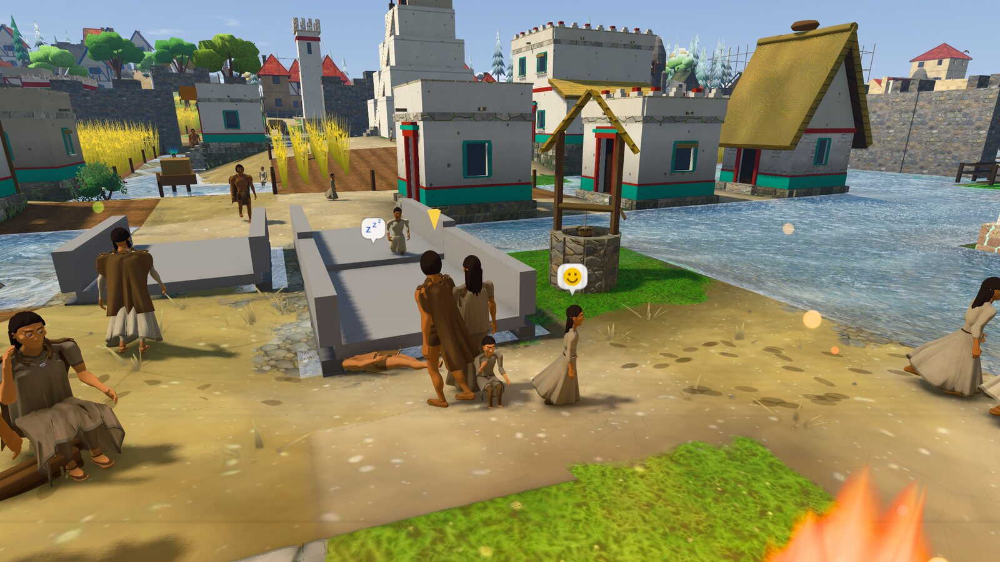
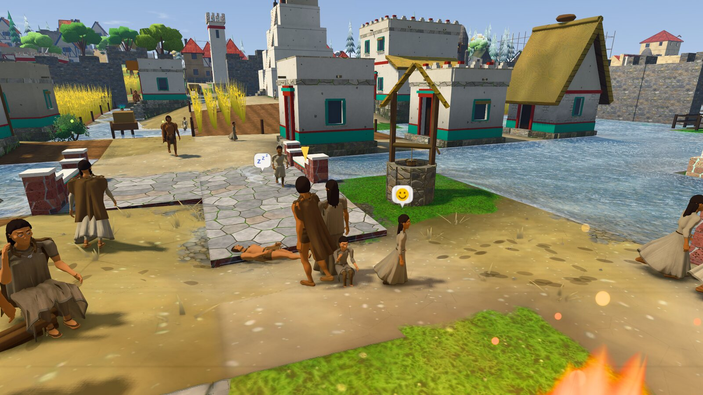
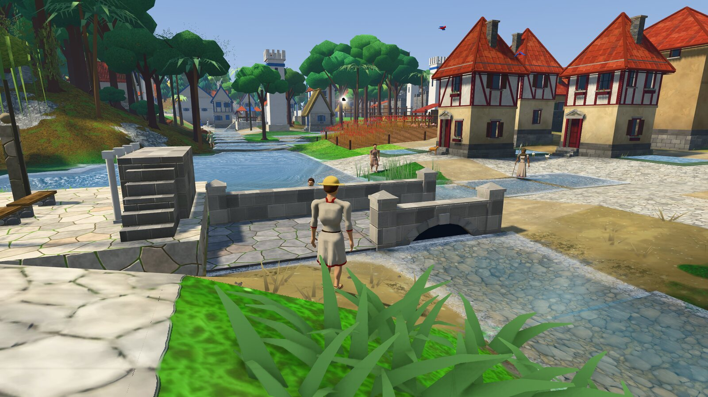
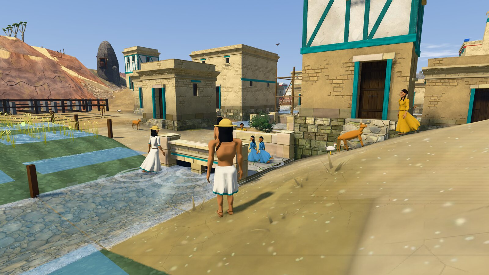

Romana, em Alba Longa
Egípcia, em MênfisPontes de pedra, uma para cada povo
Foi tirando fotos para este diário que o defeito apareceu: toda ponte de rua era a mesma laje cinza lisa. Agora cada ponte é feita na pedra e à maneira do povo que a ergueu:
- Romana: pedra talhada, arco pleno com a pedra do meio saliente.
- Egípcia: arenito, laje sobre pilares, cornija e pilones nas pontas.
- Asteca: pedra vulcânica avermelhada com capa de estuque e filetes vermelho e turquesa.
- Grega: mármore claro, vão em degraus. Clássica: tijolo, arco baixo.
- Nórdica: madeira, tábuas atravessadas, corrimão e escoras em X.
Numa cidade conquistada a ponte continua sendo de quem a construiu. E três defeitos antigos morreram junto: o tabuleiro era desenhado 15 cm acima de onde os pés pisam, os outros atravessavam com os pés na água, e a mureta ficava atravessada no caminho em 11 das 17 pontes dos mundos prontos.
Você me deixou decidir sobre a ponte alta, e a resposta é: neste patch, não. As pontes ficam baixas, a um palmo da água, como pontes de canal, com o arco cortado na lateral. Quase todas cruzam canais de 4 a 8 metros, onde um dorso alto não cabe sem invadir as portas das casas da margem. O arco aberto de verdade pede um rio com leito mais fundo que as margens, e isso é assunto para um patch só do rio.
O que muda quando você jogaTenochtitlan, cheia de canais, deixa de ter blocos cinzentos em toda vista. Dá para saber de que povo é um bairro só pela ponte. E de longe a rua não acaba mais na água: a ponte aparece.